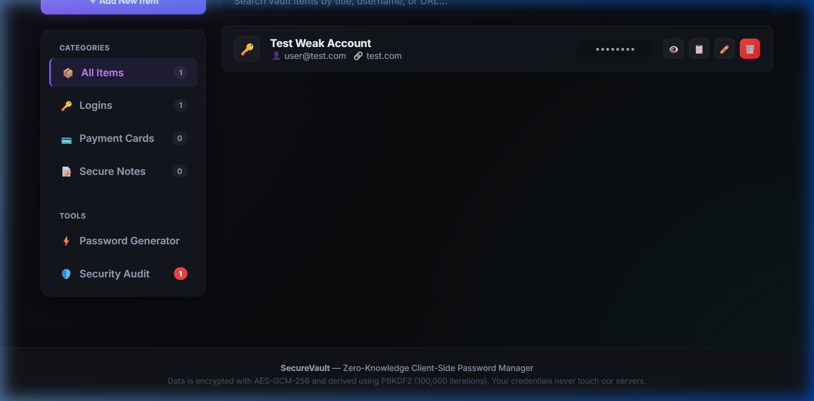
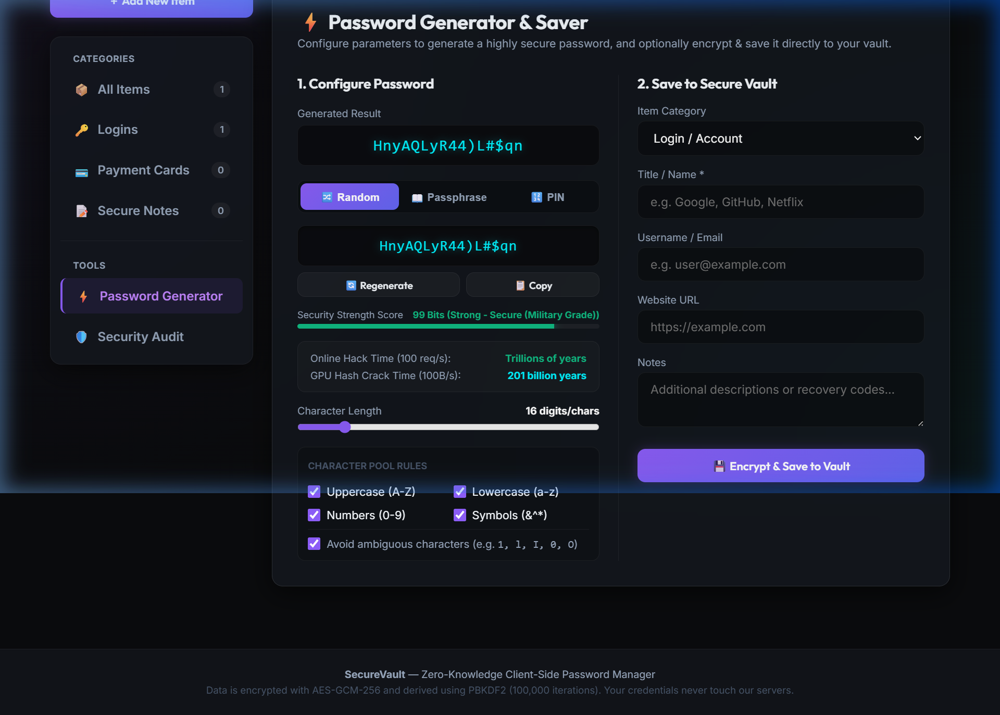
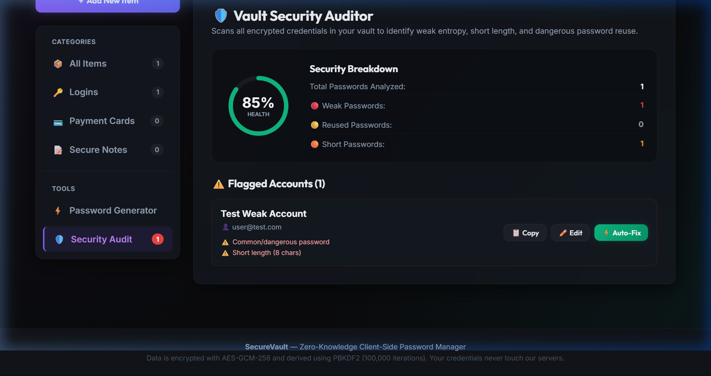

Complete guide for deploying, configuring, and managing credentials securely across Windows Desktop and Android Mobile applications.
1. Introduction & Security Model
SecureVault is a zero-knowledge, client-side encrypted password manager. This means your raw credentials, master password, and PIN codes never leave your local device and are never sent to a remote server in unencrypted form.
1.1 Zero-Knowledge Encryption
All encryption is performed locally on your device using advanced cryptography:
AES-256-GCM Encryption: Your credentials are encrypted using Advanced Encryption Standard in Galois/Counter Mode. This provides both confidentiality and integrity authentication.
PBKDF2 Key Derivation: Your Master Password is stretched using Password-Based Key Derivation Function 2 (PBKDF2) with 100,000 iterations to derive the database encryption key, protecting against brute-force attacks.
Local SQLite Storage: Your database is stored locally. Access is gated entirely by your local encryption keys.
Important Security Notice
Because SecureVault uses a zero-knowledge security model, there is no "Forgot Password" option. If you lose your Master Password and do not have your 10-word Recovery Phrase, your data cannot be recovered by anyone. Keep them safe.
1.2 Core Capabilities
Secure Vault
Organize, store, and edit usernames, passwords, URLs, and notes in an encrypted database.
Multiplatform
Access matching client-side interfaces on Windows Desktop and Android Mobile.
Password Generator
Generate strong, customizable passwords, memorable passphrases, and secure PIN codes.
Security Auditor
Analyze vault health with a visual circular score and resolve weak passwords in one-click.
2. Windows Desktop Setup
Deploying the desktop app is simple and does not require administrative privileges. Follow these steps to configure your environment.
2.1 Installation
1
Run Setup Package
Locate the installer file SecureVault Setup 1.0.0.exe on your machine and double-click to start. Select your desired directory.
2
Launch Application
Upon completion, check "Run SecureVault" and click Finish. Shortcuts will be generated on your Desktop and in the Start Menu as SecureVault.
2.2 First-Time Vault Initialization
When you launch the application for the first time, you must initialize your local vault database. Follow the steps below corresponding to Figure 2.1:
1
Enter Master Password
Enter a long, complex password in the Master Password input field. The real-time strength indicator underneath will evaluate the password's complexity. Aim for a green status indicator.
2
Confirm Master Password
Re-type your password in the Confirm Master Password input field. The system will display a checkmark or confirmation badge when the passwords match.
3
Set Quick Security PIN
Input a 4-to-6 digit numeric PIN in the Quick PIN input field and confirm it in the field below. This PIN allows fast unlocking during your session without re-typing your full Master Password.
4
Proceed to Recovery Phrase
Once all fields are validly filled and confirm matches are verified, click the blue Proceed to Recovery Phrase button to move to Step 2.
The second stage of setup generates a unique fallback phrase to verify your account in case you lose your master credentials. Refer to Figure 2.2 to complete this step:
1
Observe and Copy the 10 Seed Words
Observe the 10-word recovery phrase displayed in the numbered badges on your screen. These words are drawn randomly from our secure dictionary.
2
Physically Write Down the Words
Write down the 10 words on paper in the exact sequence shown. Avoid storing them digitally (e.g. in text files, emails, or unencrypted screenshots) to prevent online exposure.
3
Tick the Acknowledgment Checkbox
Check the box labeled "I have securely written down and stored my 10-word recovery phrase". This action activates the initialization button.
4
Initialize Secure Vault
Click the green Initialize Secure Vault button. SecureVault will encrypt and write your security database to your local machine and open the dashboard.
Access your credentials on-the-go by installing the Android package file. The mobile app utilizes the exact same local database scheme and security guidelines.
3.1 Installation
1
Transfer and Install APK
Copy app-debug.apk to your Android device. Enable "Install Unknown Apps" for your File Manager under Settings, tap the APK, and install the app (labeled SecureVault).
3.2 Syncing & Importing Your Vault
2
Database Export/Import
Go to Settings → Export Vault on desktop. Transfer the encrypted file vault_backup.json to your mobile device. In the mobile app, click Import Vault, load the file, and enter your Master Password.
3.3 Lock and Unlock State
To protect your keys when the device is left unattended, the vault automatically locks after a period of inactivity. Refer to Figure 3.1 to unlock the application:
1
Locate Unlock Inputs
When the auto-lock triggers or you lock the vault manually, the unlock screen covers the app. Locate the input field which supports either your Master Password or Quick PIN.
2
Enter Credentials
Type your Master Password or Quick PIN. You can click the eye icon on the right side of the input field to toggle visibility and check your typing.
3
Unlock Vault
Click the blue Unlock Vault button or press the Enter key on your keyboard. The database will be decrypted and you will be returned to your dashboard.
SecureVault makes it straightforward to add, organize, search, and generate high-entropy passwords.
4.1 Managing Credentials
Manage and retrieve your credentials using the steps below matching Figure 4.1:
1
Explore Dashboard Grid
All saved credentials are listed in cards indicating their site title, username, target website URL, and strength level.
2
Search & Filter Items
Type keywords in the search bar at the top of the screen. The list instantly filters items by matching title, username, or URL fields.
3
Reveal & Copy Actions
Click the eye icon (👁️) to reveal a password. For your security, a verification overlay will require you to enter your Quick Security PIN before the password is shown in plain text. The clipboard copy button (📋) copies the password directly and clears it automatically after 30 seconds.
4
Add New Credential
Click the blue + Add Item button on the top right to open the creation form. Fill in the title, username, password, URL, and any custom notes, then save.

Figure 4.1: Vault Dashboard (Credential List & Quick Actions)
PIN-Shield Protected Viewing
To protect your credentials from physical over-the-shoulder snooping when the app is active, clicking the eye reveal icon triggers an extra security confirmation layer. You must verify authorization by entering your Quick Security PIN (or Master Password) before the password will be shown in plain text.
>
4.2 Password Generator
Create secure passwords with 3 generation modes. Follow these steps as illustrated in Figure 4.2:
1
Select Password Mode
Choose from the tabs: Random String (fully customized character sets), Memorable Passphrase (XKCD dictionary-style words), or PIN Code (numeric).
2
Adjust Length and Rules
Use the slider to set your desired character/word count. Toggle parameters like uppercase, numbers, symbols, and separators. Enable "Exclude Ambiguous" to avoid character confusion.
3
Verify Crack Metrics
Review the Shannon Entropy bits and the estimated time required to crack the password under online (100 req/s) vs offline (100 billion req/s) brute-force conditions.
4
Regenerate and Copy
Click the circular arrow Regenerate button to cycle through new password choices, then click the blue Copy Password button to place it on your clipboard.

Figure 4.2: Advanced Password Generator Tool
5. Security Auditor & Best Practices
SecureVault features an automated auditing dashboard that scans your vault locally to identify vulnerabilities.
5.1 Vault Health Dashboard
Analyze and improve your overall vault health status using the steps below matching Figure 5.1:
1
Open Security Audit Panel
Select 🛡️ Security Audit from the "Tools" sidebar menu. If you have credentials saved, the system will trigger an automatic local scan.
2
Inspect Health Score
Verify the security status represented by the animated circular SVG health meter. If your vault is completely empty, it defaults to 0%. Once credentials are added, it starts at 100% and deducts points for vulnerabilities.
3
Identify Security Flags
Review the lists of flagged items categorized as Weak Passwords (entropy under 60 bits), Short Passwords (under 10 characters), or Reused Passwords (identical credentials shared across domains).
4
Trigger ⚡ One-Click Auto-Fix
Click the green ⚡ Auto-Fix button next to any vulnerable item. The system instantly generates a strong 20-character military-grade replacement, encrypts it, writes it to the local SQLite database, and updates the health meter dynamically.

Figure 5.1: Security Audit Dashboard (Circular Health Score & Flags)
5.3 General Security Best Practices
Actionable Guidelines
Run the Security Audit monthly and auto-fix any reused or weak passwords.
Write down your 10-word Recovery Phrase on paper and store it in a water/fireproof safe.
Configure the auto-lock timeout in settings to lock your database after 5 minutes of inactivity.